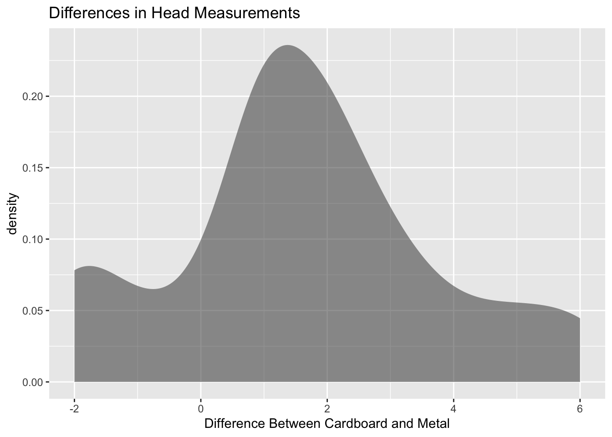
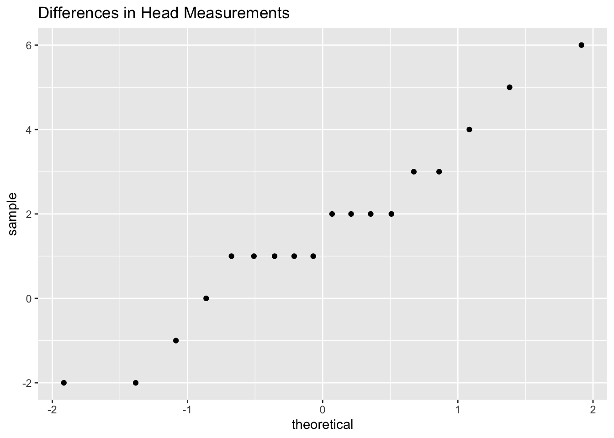
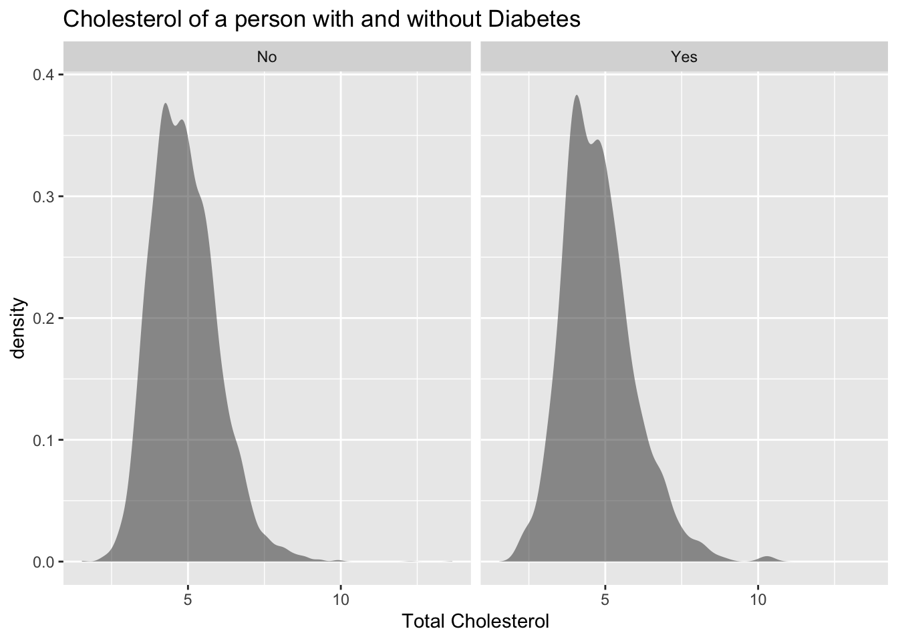
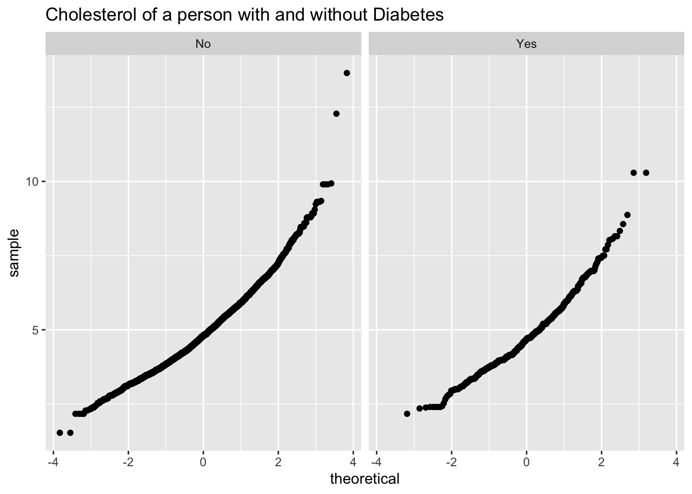
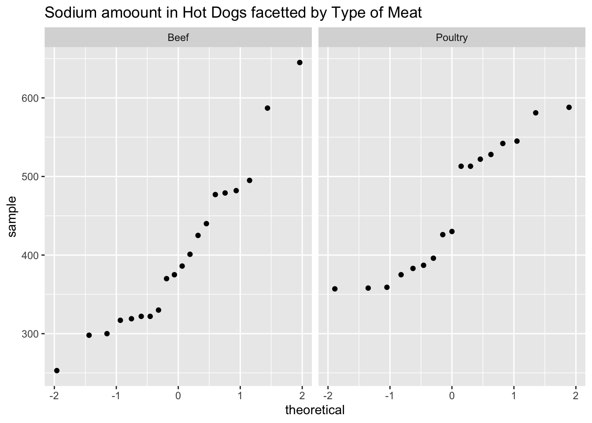

Chapter 7 discussed methods of hypothesis testing about one-population parameters. Chapter 8 discussed methods of estimating population parameters from one sample using confidence intervals. This chapter will look at methods of confidence intervals and hypothesis testing for two populations. Since there are two populations, there are two random variables, two means or proportions, and two samples (though with paired samples you usually consider there to be one sample with pairs collected). Examples of where you would do this are:
Testing and estimating the difference in testosterone levels of men before and after they had children (Gettler, McDade, Feranil & Kuzawa, 2011).
Testing the claim that a diet works by looking at the weight before and after subjects are on the diet.
Estimating the difference in proportion of those who approve of President Obama in the age group 18 to 26 year old and the 55 and over age group.
All of these are examples of hypothesis tests or confidence intervals for two populations. The methods to conduct these hypothesis tests and confidence intervals will be explored in this chapter. As a reminder, all hypothesis tests are the same process. The only thing that changes is the formula that you use and the conditions. Confidence intervals are also the same process, except that the formula is different.
10.1 Two Proportions
There are times you want to test a claim about two population proportions or construct a confidence interval estimate of the difference between two population proportions. As with all other hypothesis tests and confidence intervals, the process is the same though the formulas and conditions are different.
10.1.1 Hypothesis Test for Two Population Proportion (2-Prop Test)
State the random variables and the parameters in words.
\(x_1\) = number of successes from group 1
\(x_2\) = number of successes from group 2
\(p_1\) = proportion of successes in group 1
\(p_2\) = proportion of successes in group 2
State the null and alternative hypotheses and the level of significance
\(H_o:p_1=p_2\)
\(H_a: p_1\ne p_2\). the \(\ne\) can be replaced with \(<\) or \(>\) depending on the question.
Also, state your \(\alpha\) level here.
State and check the conditions for a hypothesis test
State: A simple random sample of size \(n_1\) is taken from population 1, and a simple random sample of size \(n_2\) is taken from population 2. Check: describe how each sample was collected.
State: The samples are independent. Check: describe why the two samples are independent.
State: The properties for the binomial distribution are satisfied for both populations. Check: describe how each population meets all the properties.
State: The sampling distribution of \(\hat{p_1}\) can be approximated as a normal distribution. Check: To determine the sampling distribution of \(\hat{p_1}\), you need to show that \(p_1*n_1\ge5\) and \(q_1*n_1\ge5\) where \(q_1=1-p_1\). If this requirement is true, then the sampling distribution of \(\hat{p_1}\) is well approximated by a normal curve. State: The sampling distribution of \(\hat{p_2}\) can be approximated as a normal distribution. Check: To determine the sampling distribution of \(\hat{p_2}\), you need to show that \(p_2*n_2\ge 5\) and \(q_2*n_2\ge 5\) where \(q_2=1-p_2\). If this requirement is true, then the sampling distribution of \(\hat{p_2}\) is well approximated by a normal curve. However, if you do not know \(p_1\) and \(p_2\), you will need to use \(\hat{p_1}\) and \(\hat{p_2}\) instead. This is not perfect, but it is the best you can do.
Find the sample statistics, test statistic, and p-value
On rStudio, use the command
prop.test(c(x1,x2), c(n1, n2)
Conclusion
This is where you write reject or fail to reject \(H_o\). The rule is: if the p-value \(<\alpha\), then reject \(H_o\). If the p-value \(\ge \alpha\), then fail to reject \(H_o\).
Interpretation
This is where you interpret in real world terms the conclusion to the test. The conclusion for a hypothesis test is that you either have enough evidence to support \(H_a\), or you do not have enough evidence to support \(H_a\).
10.1.2 Confidence Interval for the Difference Between Two Population Proportion (2-Prop Interval)
The confidence interval for the difference in proportions has the same random variables and proportions and the same conditions as the hypothesis test for two proportions. If you have already completed the hypothesis test, then you do not need to state them again. If you haven’t completed the hypothesis test, then state the random variables and proportions and state and check the conditions before completing the confidence interval step.
Find the sample statistics and the confidence interval
The confidence interval estimate of the difference is found using the following command in r Studio:
prop.test(c(x1,x2), c(n1, n2), conf.level=C) Type C as a decimal
Statistical Interpretation: In general this looks like, “You are C% confident that the confidence interval contains the true difference in proportions.”
Real World Interpretation: This is where you state how much more (or less) the first proportion is from the second proportion.
10.1.3 Example: Hypothesis Test for Two Population Proportions
Do husbands cheat on their wives in a different proportion from the proportion of wives cheat on their husbands (“Statistics brain,” 2013)? Suppose you take a group of 1000 randomly selected husbands and find that 231 had cheated on their wives. Suppose in a group of 1200 randomly selected wives, 176 cheated on their husbands. Do the data show that the proportion of husbands who cheat on their wives is different from the proportion of wives who cheat on their husbands. Test at the 5% level.
10.1.3.1 Solution
State the random variables and the parameters in words.
\(x_1\) = number of husbands who cheat on his wife
\(x_2\) = number of wives who cheat on her husband
\(p_1\) = proportion of husbands who cheat on his wife
\(p_2\) = proportion of wives who cheat on her husband
State the null and alternative hypotheses and the level of significance
\(H_o: p_1=p_2\)
\(H_a: p_1\ne p_2\)
level of significance is \(\alpha=0.05\)
State and check the conditions for a hypothesis test
State: A simple random sample of 1000 responses about cheating from husbands is taken. Check: This was stated in the problem. State: A simple random sample of 1200 responses about cheating from wives is taken. Check: This was stated in the problem.
State: The samples are independent. Check: The samples are independent. This is true since the samples involved different genders.
State: The properties of the binomial distribution are satisfied in both populations. Check: This is true since there are only two responses, there are a fixed number of trials, the probability of a success is the same, and the trials are independent.
State: The sampling distributions of \(\hat{p_1}\) and \(\hat{p_2}\) can be approximated with a normal distribution. Check: \(n_1*p_1\), \(n_2*p_2\), \(n_1*q_1\), and \(n_2*q_2\) are all greater than or equal to 5. So both sampling distributions of \(\hat{p_1}\) and \(\hat{p_2}\) can be approximated with a normal distribution.
Find the sample statistics, test statistic, and p-value
On r use the command:
prop.test(c(231,176), c(1000, 1200))
2-sample test for equality of proportions with continuity correction
data: c out of c231 out of 1000176 out of 1200
X-squared = 25.173, df = 1, p-value = 5.241e-07
alternative hypothesis: two.sided
95 percent confidence interval:
0.05050705 0.11815962
sample estimates:
prop 1 prop 2
0.2310000 0.1466667
Conclusion
Reject \(H_o\), since the p-value is less than 5%.
Interpretation
This is enough evidence to support that the proportion of husbands having affairs is different from the proportion of wives having affairs.
10.1.4 Example: Confidence Interval for Two Population Proportions
What is the difference in proportion that husbands cheat on their wives than wives cheat on the husbands (“Statistics brain,” 2013)? Suppose you take a group of 1000 randomly selected husbands and find that 231 had cheated on their wives. Suppose in a group of 1200 randomly selected wives, 176 cheated on their husbands. Estimate the difference in the proportion of husbands and wives who cheat on their spouses using a 95% confidence level.
10.1.4.1 Solution
State the random variables and the parameters in words.
2-sample test for equality of proportions with continuity correction
data: c out of c231 out of 1000176 out of 1200
X-squared = 25.173, df = 1, p-value = 5.241e-07
alternative hypothesis: two.sided
95 percent confidence interval:
0.05050705 0.11815962
sample estimates:
prop 1 prop 2
0.2310000 0.1466667
Statistical Interpretation: You are 95% confident that \(0.05050705<p_1-p_2<0.11815962\) contains the true difference in proportions.
Real World Interpretation: The proportion of husbands who cheat on their wives is anywhere from 5.05% to 11.82% higher than the proportion of wives who cheat on their husband.
10.1.5 Homework for Two Proportions Section
In each problem show all steps of the hypothesis test or confidence interval. If some of the conditions are not met, note that the results of the test or interval may not be correct and then continue the process of the hypothesis test or confidence interval.
Many high school students take the AP tests in different subject areas. In 2007, of the 144,796 students who took the biology exam 84,199 of them were female. In that same year, of the 211,693 students who took the calculus AB exam 102,598 of them were female (“AP exam scores,” 2013). Is there enough evidence to show that the proportion of female students taking the biology exam is different than the proportion of female students taking the calculus AB exam? Test at the 5% level.
Many high school students take the AP tests in different subject areas. In 2007, of the 144,796 students who took the biology exam 84,199 of them were female. In that same year, of the 211,693 students who took the calculus AB exam 102,598 of them were female (“AP exam scores,” 2013). Estimate the difference in the proportion of female students taking the biology exam and female students taking the calculus AB exam using a 90% confidence level.
Many high school students take the AP tests in different subject areas. In 2007, of the 211,693 students who took the calculus AB exam 102,598 of them were female and 109,095 of them were male (“AP exam scores,” 2013). Is there enough evidence to show that the proportion of female students taking the calculus AB exam is different from the proportion of male students taking the calculus AB exam? Test at the 5% level.
Many high school students take the AP tests in different subject areas. In 2007, of the 211,693 students who took the calculus AB exam 102,598 of them were female and 109,095 of them were male (“AP exam scores,” 2013). Estimate using a 90% level the difference in proportion of female students taking the calculus AB exam versus male students taking the calculus AB exam.
Are there more children diagnosed with Autism Spectrum Disorder (ASD) in states that have larger urban areas over states that are mostly rural? In the state of Pennsylvania, a fairly urban state, there are 245 eight year old diagnosed with ASD out of 18,440 eight year old evaluated. In the state of Utah, a fairly rural state, there are 45 eight year old diagnosed with ASD out of 2,123 eight year old evaluated (“Autism and developmental,” 2008). Is there enough evidence to show that the proportion of children diagnosed with ASD in Pennsylvania is different than the proportion in Utah? Test at the 1% level.
Are there more children diagnosed with Autism Spectrum Disorder (ASD) in states that have larger urban areas over states that are mostly rural? In the state of Pennsylvania, a fairly urban state, there are 245 eight year old diagnosed with ASD out of 18,440 eight year old evaluated. In the state of Utah, a fairly rural state, there are 45 eight year old diagnosed with ASD out of 2,123 eight year old evaluated (“Autism and developmental,” 2008). Estimate the difference in proportion of children diagnosed with ASD between Pennsylvania and Utah. Use a 98% confidence level.
A child dying from an accidental poisoning is a terrible incident. Is it more likely that a male child will get into poison than a female child? To find this out, data was collected that showed that out of 1830 children between the ages one and four who pass away from poisoning, 1031 were males and 799 were females (Flanagan, Rooney & Griffiths, 2005). Do the data show that there is different proportion of male children dying of poisoning than female children? Test at the 1% level.
A child dying from an accidental poisoning is a terrible incident. Is it more likely that a male child will get into poison than a female child? To find this out, data was collected that showed that out of 1830 children between the ages one and four who pass away from poisoning, 1031 were males and 799 were females (Flanagan, Rooney & Griffiths, 2005). Compute a 99% confidence interval for the difference in proportions of poisoning deaths of male and female children ages one to four.
10.2 Paired Samples for Two Means
Are two populations the same? Is the average height of men taller than the average height of women? Is the mean weight less after a diet than before?
You can compare populations by comparing their means. You take a sample from each population and compare the statistics.
Anytime you compare two populations you need to know if the samples are independent or dependent. The formulas you use are different for different types of samples.
If how you choose one sample has no effect on the way you choose the other sample, the two samples are independent. The way to think about it is that in independent samples, the observations from one sample are overall different from the observations from the other sample. This will mean that sample one has no affect on sample two. The sample values from one sample are not related or paired with values from the other sample.
If you choose the samples so that a measurement in one sample is paired with a measurement from the other sample, the samples are dependent or matched or paired. (Often a before and after situation.) You want to make sure the there is a meaning for pairing data values from one sample with a specific data value from the other sample. One way to think about it is that in dependent samples, the observations from one sample are the same observations from the other sample, though there can be other reasons to pair values. This makes the sample values from each sample paired.
In tidy data, remember each row is a unit of observation, and each column is a variable. In paired samples, you would have two variables that you are working with. In independent samples, you would have a variable that distinguishes an observation from another observation. As an example, in the Pulse data frame, consider the variables pulse_before and pulse_after. Since they are measured off the same observation, then comparing the two variables would be a paired samples analysis. However, consider the pulse_after and whether a person smokes would be comparing the variable pulse_after against the variable smokes to see if smoking effects a person’s pulse rate after exercise. In this case, the observations would be different based on smoking yes or smoking no. Consider the variable smoking to be the factor that one is interested in seeing how it effects pulse rate in the data frame Table 4.7.
10.2.1 Example: Independent or Dependent Samples
Determine if the following are dependent or independent samples.
Randomly choose 5 men and 6 women and compare their heights
Choose 10 men and weigh them. Give them a new diet drug and later weigh them again.
Take 10 people and measure the strength of their dominant arm and their non-dominant arm.
10.2.1.1 Solution
Randomly choose 5 men and 6 women and compare their heights
Independent, since there is no reason that one value belongs to another. The units of observations are not the same for both samples. The units of observations are definitely different. A way to think about this is that the knowledge that a man is chosen in one sample does not give any information about any of the woman chosen in the other sample.
Choose 10 men and weigh them. Give them a new diet drug and later weigh them again.
Dependent, since each person’s before weight can be matched with their after weight. The units of observations are the same for both samples. A way to think about this is that the knowledge that a person weighs 400 pounds at the beginning will tell you something about their weight after the diet drug.
Take 10 people and measure the strength of their dominant arm and their non-dominant arm.
Dependent, since you can match the two arm strengths. The units of observations are the same for both samples. So the knowledge of one person’s dominant arm strength will tell you something about the strength of their non-dominant arm.
To analyze data when there are matched or paired samples, called dependent samples, you conduct a paired t-test. Since the samples are matched, you can find the difference between the values of the two random variables.
10.2.2 Hypothesis Test for Two Sample Paired t-Test
State the random variables and the parameters in words.
\(x_1\) = random variable 1
\(x_2\) = random variable 2
\(\mu_1\) = mean of random variable 1
\(\mu_2\) = mean of random variable 2
State the null and alternative hypotheses and the level of significance
The hypotheses would be
\(H_o:\mu_1=\mu_2\) or\(H_o:\mu_1-\mu_2=0\)
\(H_a:\mu_1\ne \mu_2\) or \(H_a:\mu_1-\mu_2\ne0\)
However, since you are finding the differences, then you can actually think of \(\mu_1-\mu_2=\mu_d\).
So the hypotheses could become
\(H_o:\mu_d=0\)
\(H_a:\mu_d\ne 0\) Remember, you can replace \(\ne\) with \(<\) or \(>\).
Also, state your \(\alpha\) level here.
State and check the conditions for the hypothesis test
State: A random sample of \(n\) pairs is taken. Check: state how the sample was collected.
Check: The population of the difference between random variables is normally distributed. Check: In this case the population you are interested in has to do with the differences that you find. It does not matter if each random variable is normally distributed. It is only important if the differences you find are normally distributed. Just as before, the t-test is fairly robust to the condition if the sample size is large. This means that if this condition isn’t met, but your sample size is quite large, then the results of the t-test are valid.
Find the sample statistic, test statistic, and p-value
Realize that a paired test is a one sample t-test on the difference between two variables. So you are running a one-sample t-test on a new variable known as the difference variable. You need to create this difference variable by creating a new data frame. This is done on rStudio by doing the following command (The following shows how to create the variable difference for pulse_after-pulse_before on the data frame Pulse. Change the variables used and data frame used to your data frame and variables):
This is where you write reject \(H_o\) or fail to reject \(H_o\). The rule is: if the p-value \(<\alpha\), then reject \(H_o\). If the p-value \(\ge\alpha\), then fail to reject \(H_o\).
Interpretation
This is where you interpret in real world terms the conclusion to the test. The conclusion for a hypothesis test is that you either have enough evidence to support \(H_a\), or you do not have enough evidence to support \(H_a\).
10.2.3 Confidence Interval for Difference in Means from Paired Samples (t-Interval)
The confidence interval for the difference in means has the same random variables and means and the same conditions as the hypothesis test for two paired samples. If you have already completed the hypothesis test, then you do not need to state them again. If you haven’t completed the hypothesis test, then state the random variables and means, and state and check the conditions before completing the confidence interval step.
Find the sample statistic and confidence interval. Again, you will need to create a new data frame with a difference variable. Then on rStudio the command is
t.test(~difference_variable, data=Data_Frame, conf.level=C) Type C as a decimal
Statistical Interpretation: In general this looks like, “You are C% confident that the statement contains the true mean difference.”
Real World Interpretation: This is where you state what interval contains the true mean difference.
10.2.4 Example: Hypothesis Test for Paired Samples
Is the pulse rate after exercise different from the pulse rate before exercise for a woman who drinks alcohol? Use the data frame Table 4.7. Test at the 5% level.
State the random variables and the parameters in words.
\(x_1\) = pulse of a smoking woman who drinks alcohol after exercise
\(x_2\) = pulse of a smoking woman who drinks alcohol before exercise
\(\mu_1\) = mean pulse of a smoking woman who drinks alcohol after exercise
\(\mu_2\) = mean pulse of a smoking woman who drinks alcohol after exercise
State the null and alternative hypotheses and the level of significance
\(H_o: \mu_1=\mu_2\)
\(H_a: \mu_1\ne \mu_2\)
level of significance, \(\alpha=0.05\)
State and check the conditions for the hypothesis test
State: A random sample of 110 pairs of pulse rates after and before exercise was taken. Check: The data frame says that the data was collected from students in classes for several years. Though this was not a random sample, it is probably a representative sample.
State: The population of the difference in after and before pulse rates is normally distributed. Check: To see if this is true, look at the density plot and the normal quantile plot for the difference between after and before. This variable must be created before the density plot and normal quantile plot can be created. The data frame Table 10.2 is females who drink alcohol.
Table 10.3: Pulse Rates Before and After Exercise of Females who do drink Alcohol with Difference
height
weight
age
gender
smokes
alcohol
exercise
ran
pulse_before
pulse_after
year
difference
165
60
19
female
yes
yes
low
ran
88
120
98
32
163
47
23
female
yes
yes
low
ran
71
125
98
54
173
57
18
female
no
yes
moderate
sat
86
88
93
2
179
58
19
female
no
yes
moderate
ran
82
150
93
68
167
62
18
female
no
yes
high
ran
96
176
93
80
173
64
18
female
no
yes
low
sat
90
88
93
-2
Using Table 10.3 create a density plot and normal quantile plot on the difference variable.
gf_density(~difference, data=Pulse_female, title ="Difference in Pulse Rates for Females who drink Alcohol", xlab="Difference Between Before and After")
Figure 10.1: Density plot of differences in pulse rates
gf_qq(~difference, data=Pulse_female, title ="Difference in Pulse Rates for Females who drink Alcohol")
Figure 10.2: Normal Quantile Plot of Differences in Pulse Rates
The density plot is not symmetrical and the normal quantile plot on the differences is not linear. So you cannot assume that the distribution of the difference in pulse rates is normal. It is good that the t-test is robust if there is a large sample. The sample is of size 110, so that should be adequate to assume the conclusion is valid.
Find the sample statistic, test statistic, and p-value On r Studio, use the command:
t.test(~difference, data=Pulse_female)
One Sample t-test
data: difference
t = 4.1353, df = 26, p-value = 0.0003283
alternative hypothesis: true mean is not equal to 0
95 percent confidence interval:
11.51152 34.26625
sample estimates:
mean of x
22.88889
Conclusion
Since the p-value < 0.05, reject \(H_o\).
Interpretation
There is enough evidence to support that there is a difference in pulse rate before and after exercise of females who smoke.
10.2.5 Example: Hypothesis Test for Paired Samples
The New Zealand Air Force purchased a batch of flight helmets. They then found out that the helmets didn’t fit. In order to make sure that they order the correct size helmets, they measured the head size of recruits. To save money, they wanted to use cardboard calipers, but were not sure if they will be accurate enough. So they took 18 recruits and measured their heads with the cardboard calipers and also with metal calipers. The data frame is in Table 10.4 (Helmet Sizes for New Zealand Airforce, 2019). Do the data provide enough evidence to show that there is a difference in measurements between the cardboard and metal calipers? Use a 5% level of significance.
Description After purchasing a batch of flight helmets that did not fit the heads of many pilots, the NZ Airforce decided to measure the head sizes of all recruits. Before this was carried out, information was collected to determine the feasibility of using cheap cardboard calipers to make the measurements, instead of metal ones which were expensive and uncomfortable. The data lists the head diameters of 18 recruits measured once using cardboard calipers and again using metal calipers. One question is whether there is any systematic difference between the two sets of calipers. One might also ask whether there is more variability in the cardboard calipers measurement than that of the metal calipers.
This data frame contains the following columns:
Cardboard: measurement using cardboard calipers (cm)
Metal: measurement using metal calipers (cm)
Source Helmet Sizes for New Zealand Airforce. (n.d.). Retrieved July 20, 2019, from http://www.statsci.org/data/oz/nzhelmet.html
References Data courtesy of Dr Stephen Legg. Seber and Lee (1998). Page 545.
10.2.5.1 Solution
State the random variables and the parameters in words.
\(x_1\) = head measurement of recruit using cardboard caliper
\(x_2\) = head measurement of recruit using metal caliper
\(\mu_1\)= mean head measurement of recruit using cardboard caliper
\(\mu_2\) = mean head measurement of recruit using metal caliper
State the null and alternative hypotheses and the level of significance
\(H_o:\mu_1=\mu_2\)
\(H_a:\mu_1\ne \mu_2\)
level of significance, \(\alpha=0.05\)
State and check the conditions for the hypothesis test
State: A random sample of 18 pairs of head measures of recruits with cardboard and metal caliper was taken. Check: This was not stated, but probably could be safely assumed.
State: The population of the difference in head measurements between cardboard and metal calipers is normally distributed. Check: First create the difference variable, then the density plot and normal quantile plot.
gf_density(~difference, data=Helmet, title="Differences in Head Measurements", xlab="Difference Between Cardboard and Metal")

Figure 10.3: Density plot of differences in head measurements
gf_qq(~difference, data=Helmet, title="Differences in Head Measurements")

Figure 10.4: Normal Quantile Plot of Differences in Head Measurements
This density plot Figure 10.3 looks somewhat bell shaped. The normal quantile plot Figure 10.4 on the differences looks somewhat linear. So you can assume that the distribution of the difference in weights is normal.
Find the sample statistic, test statistic, and p-value
Using rStudio the command is
t.test(~difference, data=Helmet)
One Sample t-test
data: difference
t = 3.1854, df = 17, p-value = 0.005415
alternative hypothesis: true mean is not equal to 0
95 percent confidence interval:
0.5440163 2.6782060
sample estimates:
mean of x
1.611111
The sample statistic is 1.6111, the test statistic is 3.1854, and the p-value is 0.005415.
Conclusion
Since the p-value \(<\) 0.05, reject \(H_o\).
Interpretation
There is enough evidence to support that the mean head measurements using the cardboard calipers are not the same as when using the metal calipers. So it looks like the New Zealand Air Force shouldn’t use the cardboard calipers.
10.2.6 Example: Confidence Interval for Paired Samples
The New Zealand Air Force purchased a batch of flight helmets. They then found out that the helmets didn’t fit. In order to make sure that they order the correct size helmets, they measured the head size of recruits. To save money, they wanted to use cardboard calipers, but were not sure if they will be accurate enough. So they took 18 recruits and measured their heads with the cardboard calipers and also with metal calipers. The data frame is in Table 10.4 (Helmet Sizes for New Zealand Airforce, 2019). Estimate the difference in measurements between the cardboard and metal calipers using a 95% confidence interval.
10.2.6.1 Solution
State the random variables and the parameters in words.
Using the data frame Table 10.5 the rStudio the command is
t.test(~difference, data=Helmet, conf.leve=0.95)
One Sample t-test
data: difference
t = 3.1854, df = 17, p-value = 0.005415
alternative hypothesis: true mean is not equal to 0
95 percent confidence interval:
0.5440163 2.6782060
sample estimates:
mean of x
1.611111
Statistical Interpretation: You are 95% confidence that \(0.5440163<\mu_1-\mu_2<2.6782060\) contains the true mean difference in head measurement between using the cardboard and metal calibers.
Real World Interpretation: The mean head measurement using the cardboard calibers is anywhere from 0.54 cm to 2.68 cm more than the head measurement using the metal calibers.
Examples 9.2.6 and 9.2.7 use the same data set, but one is conducting a hypothesis test and the other is conducting a confidence interval. Notice that the hypothesis test’s conclusion was to reject and say that there was a difference in the means, and the confidence interval does not contain the number 0. If the confidence interval did contain the number 0, then that would mean that the two means could be the same. Since the interval did not contain 0, then you could say that the means are different just as in the hypothesis test. This means that the hypothesis test and the confidence interval can produce the same interpretation. Do be careful though, you can run a hypothesis test with a particular significance level and a confidence interval with a confidence level that is not compatible with your significance level. This will mean that the conclusion from the confidence interval would not be the same as with a hypothesis test. So if you want to estimate the mean difference, then conduct a confidence interval. If you want to show that the means are different, then conduct a hypothesis test. As a reminder, the American Statistical Association (ASA) suggests not conducting hypothesis tests and just create confidence intervals.
10.2.7 Homework for Paired Samples for Two Means Section
In each problem show all steps of the hypothesis test or confidence interval. If some of the conditions are not met, note that the results of the test or interval may not be correct and then continue the process of the hypothesis test or confidence interval.
The cholesterol level of patients who had heart attacks was measured multiple times after the heart attack. The researchers want to see if the cholesterol level of patients who have heart attacks changes as the time since their heart attack increases. The data is in Table 4.2. Do the data show that the mean cholesterol level of patients that have had a heart attack changes as the time increases since their heart attack? Use day2 and day4 variables to answer the question. Test at the 1% level.
Code book for Data Frame Cholesterol is below Table 10.5.
The cholesterol level of patients who had heart attacks was measured multiple times after the heart attack. The researchers want to see if the cholesterol level of patients who have heart attacks changes as the time since their heart attack increases. The data is in Table 10.5. Calculate a 98% confidence interval for the mean difference in cholesterol levels from day two to day four.
All Fresh Seafood is a wholesale fish company based on the east coast of the U.S. Catalina Offshore Products is a wholesale fish company based on the west coast of the U.S. Table 10.6 contains prices from both companies for specific fish types (\“Seafood online,\” 2013) (\“Buy sushi grade,\” 2013). Do the data provide enough evidence to show that fish cost different from west coast fish wholesaler and east coast wholesaler? Test at the 5% level.
Description Price of fish was collected from two websites. One for Catalina Offshore Products (west coast) and the other for All Fresh Seafood (east coast) in 2013.
This data frame contains the following columns:
fish: type of fish for sale
east: price of fish from east coast supplier ($)
west: price of fish from west coast supplier ($)
Source Seafood online. (2013, November 20). Retrieved from http://www.allfreshseafood.com/
Buy sushi grade fish online. (2013, November 20). Retrieved from http://www.catalinaop.com/
References Websites of Catalina Offshore Products and All Fresh Seafood
All Fresh Seafood is a wholesale fish company based on the east coast of the U.S. Catalina Offshore Products is a wholesale fish company based on the west coast of the U.S. Table 10.6 contains prices from both companies for specific fish types (\“Seafood online,\” 2013) (\“Buy sushi grade,\” 2013). Find a 95% confidence interval for the mean difference in wholesale price between the east coast and west coast suppliers.
The British Department of Transportation studied to see if people avoid driving or shopping, or have more accidents on Friday the 13th. They collected data from different locations (Friday the 13th, 2019). The data for each location on the two different dates is in Table 10.7. Do the data show that on average different number of people are engaged in activities on Friday the 13th? Test at the 5% level.
Description This file consists of three separate data sets, all of which address the issues of how superstitions regarding Friday the 13th affect human behavior, and whether Friday the 13th is an unlucky day. Scanlon, et al. collected data on traffic and shopping patterns and accident frequency for Fridays the 6th and 13th between October of 1989 and November of 1992.
For the first data set, the researchers obtained information from the British Department of Transport regarding the traffic flows between junctions 7 to 8 and junctions 9 to 10 of the M25 motorway. They collected the numbers of shoppers in nine different supermarkets in southeast England for the second data set. The third data set contains numbers of emergency admissions to hospitals due to transport accidents.
We present the three data sets in a combined format, with the variable “Data set” as an identifier that may be used to separate them.
This data frame contains the following columns:
source: which data set the data were obtained from
year: which year the data was collected from
Month: the month that the Friday was in
x6th: Number of cars passing through junction (traffic data set), shoppers for each supermarket (shopping data set), or admissions due to transport accidents (accident data set) on Friday the 6th
x13th: Number of cars passing through junction (traffic data set), shoppers for each supermarket (shopping data set), or admissions due to transport accidents (accident data set) on Friday the 13th
location: Motorway junction (traffic data set), supermarket location (shopping data set) or hospital (accident data set) to which the data correspond
Source (n.d.). Retrieved from https://www3.nd.edu/~busiforc/handouts/Data and Stories/t test/Friday The Thirteenth/Friday The Thirteenth Data.html
References Scanlon, T.J., Luben, R.N., Scanlon, F.L., Singleton, N. (1993), “Is Friday the 13th Bad For Your Health?,” BMJ, 307, 1584-1586.
The British Department of Transportation studied to see if people avoid driving or shopping, or have more accidents on Friday the 13th. They collected data from different locations (Friday the 13th, 2019). The data for each location on the two different dates is in Table 10.7. Do the data show that on average different number of people are engaged in activities on Friday the 13th? Estimate the mean difference in activity count between the 6th and the 13th using a 95% level.
To determine if Reiki is an effective method for treating pain, a pilot study was carried out where a certified second-degree Reiki therapist provided treatment on volunteers. Pain was measured using a visual analogue scale (VAS) and a likert scale immediately before and after the Reiki treatment (Olson & Hanson, 1997). The data is in Table 4.9. Do the data show that Reiki treatment reduces pain? Test at the 5% level.
Code book for data frame Reiki is below Table 4.9.
To determine if Reiki is an effective method for treating pain, a pilot study was carried out where a certified second-degree Reiki therapist provided treatment on volunteers. Pain was measured using a visual analogue scale (VAS) and a likert scale immediately before and after the Reiki treatment (Olson & Hanson, 1997). The data is in Table 4.9. Compute a 90% confidence level for the mean difference in VAS score from before and after Reiki treatment.
The female labor force participation rates (FLFPR) of women in countries from 1990 to 2018 are in table 9.2.8.5 (Labor force participation rate, female (% of female population ages 15+) (modeled ILO estimate), 2019). Do the data show that the mean female labor force participation rate in 1990 is different from that in the 2018 using a 5% level of significance?
Table 10.8: Female Labor Force Participation Rates
Country.Name
Country.Code
Region
IncomeGroup
y1990
y1991
y1992
y1993
y1994
y1995
y1996
y1997
y1998
y1999
y2000
y2001
y2002
y2003
y2004
y2005
y2006
y2007
y2008
y2009
y2010
y2011
y2012
y2013
y2014
y2015
y2016
y2017
y2018
Aruba
ABW
Latin America & Caribbean
High income
NA
NA
NA
NA
NA
NA
NA
NA
NA
NA
NA
NA
NA
NA
NA
NA
NA
NA
NA
NA
NA
NA
NA
NA
NA
NA
NA
NA
NA
Afghanistan
AFG
South Asia
Low income
43.11500
43.12400
43.12900
43.07200
43.00300
43.01700
42.77000
42.55400
42.41300
42.3340
42.27400
42.53900
42.89900
43.28600
43.66100
44.02500
43.59700
43.19200
42.8730
42.70900
42.73500
43.32800
44.11700
45.03900
46.01700
47.00100
47.76600
48.47400
48.66000
Angola
AGO
Sub-Saharan Africa
Lower middle income
74.94500
74.87900
74.82600
74.78200
74.77000
74.78400
74.78300
74.80600
74.84600
74.8940
74.94100
74.96200
74.98400
75.01100
75.04800
75.09400
75.12600
75.16500
75.2090
75.25600
75.30700
75.34400
75.38900
75.43300
75.46500
75.47900
75.47000
75.45100
75.41200
Albania
ALB
Europe & Central Asia
Upper middle income
53.77100
56.29600
56.68700
55.74700
54.90400
53.74600
53.07500
53.81200
53.15400
52.2540
51.76900
51.11000
50.67900
49.75900
48.87800
48.05100
47.38900
46.80300
46.2690
44.94500
45.69300
47.10400
48.80600
44.65000
44.78900
47.67600
47.45900
47.31200
47.19100
Andorra
AND
Europe & Central Asia
High income
NA
NA
NA
NA
NA
NA
NA
NA
NA
NA
NA
NA
NA
NA
NA
NA
NA
NA
NA
NA
NA
NA
NA
NA
NA
NA
NA
NA
NA
Arab World
ARB
19.18997
19.24094
19.13159
19.29515
19.64479
19.66156
19.51602
19.27293
19.07511
19.5351
19.59284
19.52237
19.08892
19.32403
19.44488
19.53444
19.68183
20.17107
19.8473
20.05784
20.17166
20.27703
20.46453
20.76731
20.70378
20.51515
20.61605
20.56842
20.58152
Code book for data frame Labor
Description Labor force participation rate, female (% of female population ages 15+)
This data frame contains the following columns:
Country Name: The name of a country around the world
Country Code: The 3 letter country code
Region: The location of the country in the world
IncomeGroup: The World Bank’s income classification
y1990-y2018: Labor force participation rate, female (% of female population ages 15+) for the years 100–2018
Source Labor force participation rate, female (% of female population ages 15 ) (modeled ILO estimate). (n.d.). Retrieved July 20, 2019, from https://data.worldbank.org/indicator/SL.TLF.CACT.FE.ZS
References International Labour Organization, ILOSTAT database. Data retrieved in April 2019.
The female labor force participation rates (FLFPR) of women in countries from 1990 to 2018 are in Table 10.8 (Labor force participation rate, female (% of female population ages 15+) (modeled ILO estimate), 2019). Estimate the mean difference in the female labor force participation rate in 1990 to 2018 using a 95% confidence level?
Is the pulse rate after exercise different from the pulse rate before exercise for a man who drinks alcohol but doesn’t smoke? Use the data frame Pulse Table 4.7. Test at the 5% level.
Code book for data frame Pulse is below Table 4.7.
Table 4.7 contains pulse rates Compute a 95% confidence interval for the mean difference in pulse rates from before and after exercise for males who drink but do not smoke.
10.3 Independent Samples for Two Means
This section will look at how to analyze when two samples are collected that are independent. As with all other hypothesis tests and confidence intervals, the process is the same though the formulas and conditions are different.
10.3.1 Hypothesis Test for the Difference in Means from Two Independent Samples
State the random variables and the parameters in words.
\(x_1\) = random variable 1
\(x_2\)= random variable 2
\(\mu_1\)= mean of random variable 1
\(\mu_2\)= mean of random variable 2
State the null and alternative hypotheses and the level of significance
The hypotheses would be
\(H_o:\mu_1=\mu_2\)
\(H_a:\mu_1\ne \mu_2\), the \(\ne\) can be replaced with \(<\) or \(>\)
Also, state your \(\alpha\) level here.
State and check the conditions for the hypothesis test
State: A random sample of size \(n_1\) is taken from population 1. A random sample of size \(n_2\) is taken from population 2. Check: describe how both samples are collected. Note: the samples do not need to be the same size, but the test is more robust if they are.
State: The two samples are independent. Check: describe whey the samples are independent of each other.
State: Population 1 is normally distributed. Population 2 is normally distributed. Check: draw the density graph and normal quantile plot for both samples and discuss if they meet the criteria. Just as before, the t-test is fairly robust to the condition if the sample size is large. This means that if this condition isn’t met, but your sample sizes are quite large, then the results of the t-test are valid.
State: The population variances are unknown and not assumed to be equal. The old condition is that the variances are equal. However, this condition is no longer a condition that most statisticians use. This is because it isn’t really realistic to assume that the variances are equal. So just assume the condition of the variances being unknown and not assumed to be equal is true, and it will not be checked.
Find the sample statistic, test statistic, and p-value
The command using r is
t.test(variable~factor, data=Data_Frame)
Note: if the \(H_a\) is <, then the command becomes
This is where you write reject or fail to reject \(H_0\). The rule is: if the p-value \(<\alpha\), then reject \(H_o\). If the p-value \(\ge \alpha\), then fail to reject \(H_o\).
Interpretation
This is where you interpret in real world terms the conclusion to the test. The conclusion for a hypothesis test is that you either have enough evidence to support \(H_a\), or you do not have enough evidence to support \(H_a\).
10.3.2 Confidence Interval for the Difference in Means from Two Independent Samples
The confidence interval for the difference in means has the same random variables and means and the same conditions as the hypothesis test for independent samples. If you have already completed the hypothesis test, then you do not need to state them again. If you haven’t completed the hypothesis test, then state the random variables and means and state and check the conditions before completing the confidence interval step.
Find the sample statistic and confidence interval
On r Studio, the command is
t.test(variable~factor, data=Data_Frame, conf.level=C) type C as a decimal
Statistical Interpretation: In general this looks like, “You are C% confident that the interval contains the true mean difference.”
Real World Interpretation: This is where you state what interval contains the true difference in means, though often you state how much more (or less) the first mean is from the second mean.
10.3.3 Example: Hypothesis Test for Two Means
The cholesterol level of people vary for many reasons. The question is do people with diabetes have different cholesterol levels from people who do not have diabetes? Use the NHANES data frame. Test at the 5% level.
names(NHANES) #displays the names of the variables in a data frame
Code book for data frame NHANES type help(“NHANES”) in the r Console.
10.3.3.1 Solution
State the random variables and the parameters in words.
\(x_1\) = Cholesterol level of people with diabetes
\(x_2\) = Cholesterol level of people without diabetes
\(\mu_1\) = mean cholesterol level of people with diabetes
\(\mu_2\) = mean cholesterol level of people without diabetes
State the null and alternative hypotheses and the level of significance
The hypotheses would be
\(H_o: \mu_1=\mu_2\)
\(H_a: \mu_1 \ne \mu_2\)
level of significance, \(\alpha=0.05\)
State and check the conditions for the hypothesis test
State: A random sample of cholesterol levels of people with diabetes is taken. A random sample of cholesterol levels of people without diabetes is taken.
Check: The NHANES data frame uses cluster sampling which incorporates random sampling, so the sample is probably representative. This condition has been met.
State: The two samples are independent.
Check: This is because either they were dealing with people who have diabetes or not.
State: Population of all cholesterol levels of people who have diabetes is normally distributed. Population of all cholesterol levels of people without diabetes is normally distributed.
Check:
NHANES_no_NA<- NHANES |>drop_na(Diabetes) gf_density(~TotChol|Diabetes, data=NHANES_no_NA, title ="Cholesterol of a person with and without Diabetes", xlab="Total Cholesterol")

Figure 10.5: Density Plot of Cholesterol of a person with and without Diabetes
Both the yes group and the no group look somewhat bell shaped.
gf_qq(~TotChol|Diabetes, data=NHANES_no_NA, title ="Cholesterol of a person with and without Diabetes")

Figure 10.6: quantile Plot of Cholesterol of a person with and without Diabetes
Both the yes group and the no group look somewhat linear.
The population of all cholesterol levels of people who have diabetes is probably normally distributed. The population of all cholesterol levels of people who do not have diabetes is probably normally distributed.
Find the sample statistic, test statistic, and p-value
The variable is cholesterol (TotChol) and separating based on if a person has diabetes or not. So the factor is Diabetes. Using r Studio the command would be
t.test(TotChol~Diabetes, data=NHANES)
Welch Two Sample t-test
data: TotChol by Diabetes
t = 2.4286, df = 809.7, p-value = 0.01537
alternative hypothesis: true difference in means between group No and group Yes is not equal to 0
95 percent confidence interval:
0.02105115 0.19851114
sample estimates:
mean in group No mean in group Yes
4.887936 4.778155
Conclusion
Reject \(H_o\) since the p-value \(<\alpha\).
Interpretation
There is enough evidence to support that people who have diabetes have different cholesterol levels on average from people who do not have diabetes.
10.3.4 Example: Confidence Interval in Two Samples
The cholesterol level of people vary for many reasons. The question is how different is the cholesterol levels of people with diabetes from people who do not have diabetes? Use the NHANES data frame. Compute a 95% confidence interval.
10.3.4.1 Solution
State the random variables and the parameters in words.
The variable is cholesterol (TotChol) and separating based on if a person has diabetes or not. So the factor is Diabetes. Using rStudio the command would be
Welch Two Sample t-test
data: TotChol by Diabetes
t = 2.4286, df = 809.7, p-value = 0.01537
alternative hypothesis: true difference in means between group No and group Yes is not equal to 0
95 percent confidence interval:
0.02105115 0.19851114
sample estimates:
mean in group No mean in group Yes
4.887936 4.778155
Statistical Interpretation: You are 95% confident that the interval \(0.02105115<\mu_1-\mu_2<0.19851114\) contains the true difference in means.
Real World Interpretation: The mean cholesterol level for people with diabetes is anywhere from 0.021 mmol/L to 0.199 mmol/L more than the mean cholesterol level for people without diabetes.
10.3.5 Example: Hypothesis Test for Two Means
The amount of sodium in beef and poultry hot dogs was measured. (\“SOCR 012708 id,\” 2013). The data is in Table 10.9. Is there enough evidence to show that beef has different amounts of sodium on average than poultry hot dogs? Use a 5% level of significance.
Description Results of a laboratory analysis of calories and sodium content of major hot dog brands. Researchers for Consumer Reports analyzed three types of hot dog: beef, poultry, and meat (mostly pork and beef, but up to 15% poultry meat). The meat was left off this data frame so a two-sample t-test could be performed.
This data frame contains the following columns:
type: Type of hot dog (beef or poultry)
calories: Calories per hot dog
sodium: Milligrams of sodium per hot dog
Source SOCR 012708 id data hotdogs. (2013, November 13). Retrieved from http://wiki.stat.ucla.edu/socr/index.php/SOCR_012708_ID_Data_HotDogs
References SOCR Home page: http://www.socr.ucla.edu
10.3.5.1 Solution
State the random variables and the parameters in words.
\(x_1\) = sodium level in beef hot dogs
\(x_2\) = sodium level in poultry hot dogs
\(\mu_1\) = mean sodium level in beef hot dogs
\(\mu_2\) = mean sodium level in poultry hot dogs
State the null and alternative hypotheses and the level of significance
The hypotheses would be
\(H_o:\mu_1=\mu_2\)
\(H_o:\mu_1\ne \mu_2\)
level of significance: \(\alpha=0.05\)
State and check the conditions for the hypothesis test
State: A random sample of 20 sodium levels in beef hot dogs is taken. A random sample of 20 sodium levels in poultry hot dogs.
Check: The code does not state if either sample was randomly selected, but since Consumer Reports performed the test, it is safe to assume the samples were both random.
State: The two samples are independent.
Check: These are different types of hot dogs so this is true.
State; Population of all sodium levels in beef hot dogs is normally distributed. Population of all sodium levels in poultry hot dogs is normally distributed.
Check:
gf_density(~sodium|type, data=Hotdog, title="Sodium amount in Hot Dogs facetted by Type of Meat", xlab="Total Sodium Level")
Figure 10.7: Density Plot of Sodium Amount in Hot Dogs facetted by Type of Meat
The density plot for beef hot dogs looks somewhat bell shaped, but the density plot for poultry hot dogs does not look bell shaped.
gf_qq(~sodium|type, data=Hotdog, title="Sodium amoount in Hot Dogs facetted by Type of Meat")

Figure 10.8: Quantile Plot of Sodium Amount in Hot Dogs facetted by Type of Meat
The normal quantile plot Figure 10.7 for the sodium level in beef hot dogs looks somewhat linear. The normal quantile plot Figure 10.8 for the sodium level in poultry hot dogs does not look linear. The population of all sodium levels in beef hot dogs may be normally distributed, but the population of all sodium levels in poultry hot dogs is probably not normally distributed. The sample size is not very large so the results of the test may not be valid. A larger sample would be a good idea.
Find the sample statistic, test statistic, and p-value
Using rStudio the variable is sodium levels (sodium) in different types of hot dogs. So the factor is type. The command is
t.test(sodium~type, data=Hotdog)
Welch Two Sample t-test
data: sodium by type
t = -1.8798, df = 34.983, p-value = 0.06848
alternative hypothesis: true difference in means between group Beef and group Poultry is not equal to 0
95 percent confidence interval:
-120.325706 4.625706
sample estimates:
mean in group Beef mean in group Poultry
401.15 459.00
Conclusion: Fail to reject \(H_o\) since the p-value \(\ge \alpha\).
Interpretation
This is not enough evidence to support that beef hot dogs’ sodium level is different from poultry hot dogs. (Though do realize that the population conditions is not valid, so this interpretation may be invalid.)
10.3.6 Example: Confidence Interval for Two Independent Samples
The amount of sodium in beef and poultry hot dogs was measured. (“SOCR 012708 id,” 2013). The data is in Table 10.9. Find a 95% confidence interval for the mean difference in sodium levels between beef and poultry hot dogs.
10.3.6.1 Solution
State the random variables and the parameters in words.
Find the sample statistic and confidence interval Using r Studio the variable is sodium levels (sodium) in different types of hot dogs. So the factor is type. The command is
t.test(sodium~type, data=Hotdog, conf.level=0.95)
Welch Two Sample t-test
data: sodium by type
t = -1.8798, df = 34.983, p-value = 0.06848
alternative hypothesis: true difference in means between group Beef and group Poultry is not equal to 0
95 percent confidence interval:
-120.325706 4.625706
sample estimates:
mean in group Beef mean in group Poultry
401.15 459.00
Statistical Interpretation: You are 95% confident that the interval \(-120.325706<\mu_1-\mu_2<4.625706\) contains the true difference in mean sodium level between beef and poultry hot dogs.
Real World Interpretation: The mean sodium level of beef hot dogs is anywhere from 120.33 mg less than the mean sodium level of poultry hot dogs to 4.63 mg more. (The negative sign on the lower limit implies that the first mean is less than the second mean. The positive sign on the upper limit implies that the first mean is greater than the second mean.)
Do realize that the population conditions is not valid, so this interpretation may be invalid.
10.3.7 Homework for Independent Samples for Two Means Section
In each problem show all steps of the hypothesis test or confidence interval. If some of the conditions are not met, note that the results of the test or interval may not be correct and then continue the process of the hypothesis test or confidence interval.
The NHANES data contains many variables. One variable is the income of households derived from the middle income of different income categories. The variable is called HHIncomeMid. Is there enough evidence to show that the mean income of males is different from the mean income of females? Test at the 1% level.
The NHANES data contains many variables. One variable is the income of households derived from the middle income of different income categories. The variable is called HHIncomeMid. Estimate with 95% confidence the mean difference in incomes between males and females in the U.S.
A study was conducted that measured the total brain volume (TBV) of patients that had schizophrenia and patients that do not have schizophrenia. Table 10.10 contains the TBV of the all patients (“SOCR data oct2009,\” 2013). Is there enough evidence to show that the patients with schizophrenia have a different TBV on average than a patient without schizophrenia? Test at the 10% level.
Description A study to measure the total brain volume (TBV) (in ) of patients that had schizophrenia and patients that do not have schizophrenia.
This data frame contains the following columns:
type: whether the patient had schizophrenia (s) or did not have schizophrenia (n)
volume: the total brain volume of a patient.(\(mm^3\))
Source SOCR data Oct2009 id ni. (2013, November 16). Retrieved from http://wiki.stat.ucla.edu/socr/index.php/SOCR_Data_Oct2009_ID_NI
References “SOCR data nips,” 2013
A study was conducted that measured the total brain volume (TBV) of patients that had schizophrenia and patients that do not have schizophrenia. Table 10.10 contains the TBV of the all patients (“SOCR data oct2009,” 2013). Is there enough evidence to show that the patients with schizophrenia have a different TBV on average than a patient without schizophrenia? Test at the 10% level. Compute a 90% confidence interval for the difference in TBV of patients with Schizophrenia and patients without Schizophrenia.
The lengths (in kilometers) of rivers on the South Island of New Zealand and what body of water they flow into are listed in Table 4.3 (Lee, 1994). Do the data provide enough evidence to show on average that the rivers that travel to the Pacific Ocean are different length than the rivers that travel to the Tasman Sea? Use a 5% level of significance.
The lengths (in kilometers) of rivers on the South Island of New Zealand and what body of water they flow into are listed in Table 4.3 (Lee, 1994). Estimate the difference in mean lengths of rivers between rivers in New Zealand that travel to the Pacific Ocean and ones that travel to the Tasman Sea. Use a 95% confidence level.
A vitamin K shot is given to infants soon after birth. Nurses at Northbay Healthcare were involved in a study to see if how they handle the infants could reduce the pain the infants feel (\“SOCR data nips,\” 2013). The data frame is in Table 10.11. Is there enough evidence to show that infants cried a different amount on average when they are held by their mothers than if held using conventional methods? Test at the 5% level.
10.3.7.1 Table: Crying Time of Infants Given Shots Using New Methods
Table 10.11: Crying Time of Infants Given Shots Using New Methods
method
crying
convent
63
convent
0
convent
2
convent
46
convent
33
convent
33
Code book for data frame Crying
Description Nurses at Northbay Healthcare were involved in a study to see if how they handle the infants could reduce the pain the infants feel. One of the measurements taken was how long, in seconds, the infant cried after being given the shot. A random sample was taken from the group that was given the shot using conventional methods, and a random sample was taken from the group that was given the shot where the mother held the infant prior to and during the shot.
This data frame contains the following columns:
method: whether the infant was given the conventional method (convent) or the new method (new) prior to being given the vitamin K shot.
crying: how long the infant cried after given a vitamin K shot. (seconds)
Source SOCR data nips infantvitK shotdata. (2013, November 16). Retrieved from http://wiki.stat.ucla.edu/socr/index.php/SOCR_Data_NIPS_InfantVitK_ShotData
References \“SOCR data nips,\” 2013
A vitamin K shot is given to infants soon after birth. Nurses at Northbay Healthcare were involved in a study to see if how they handle the infants could reduce the pain the infants feel (\“SOCR data nips,\” 2013). The data frame is in Table 10.11. Calculate a 95% confidence interval for the mean difference in mean crying time after being given a vitamin K shot between infants held using conventional methods and infants held by their mothers.
10.4 Which Analysis Should You Conduct?
One of the most important concept that you need to understand is deciding which analysis you should conduct for a particular situation. To help you to figure out the analysis to conduct, there are a series of questions you should ask yourself.
Does the problem deal with mean or proportion?
Sometimes the problem states explicitly the words mean or proportion, but other times you have to figure it out based on the information you are given. If you counted number of individuals that responded in the affirmative to a question, then you are dealing with proportion. If you measured something, then you are dealing with mean.
Does the problem have one or two samples?
So look to see if one group was measured or if two groups were measured. You need to decide if the problem describes collecting data from one group or from two groups, or if you are comparing two different groups.
If you have two samples, then you need to determine if the samples are independent or dependent.
If the individuals are different for both samples, then most likely the samples are independent. If you can’t tell, then determine if a data value from the first sample influences the data value in the second sample. In other words, can you pair data values together so you can find the difference, and that difference has meaning. If the answer is yes, then the samples are paired. Otherwise, the samples are independent.
Does the situation involve a hypothesis test or a confidence interval?
If the problem talks about “do the data show”, “is there evidence of”, “test to see”, then you are doing a hypothesis test. If the problem talks about “find the value”, “estimate the” or “find the interval”, then you are doing a confidence interval.
So if you have a situation that has two samples, independent samples, involving the mean, and is a hypothesis test, then you have a two-sample independent t-test. Now you look up the conditions and the technology process for doing this test. Every hypothesis test involves the same six steps, and you just have to use the correct conditions and calculations. Every confidence interval has the same five steps, and again you just need to use the correct conditions and calculations. So this is why it is so important to figure out what analysis you should conduct.